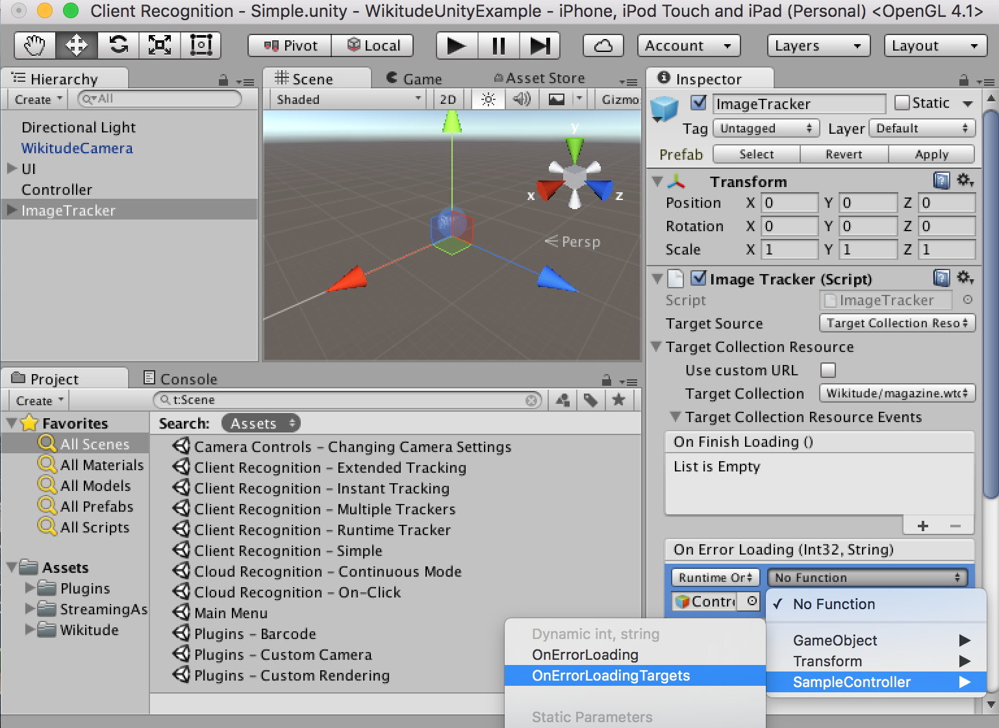
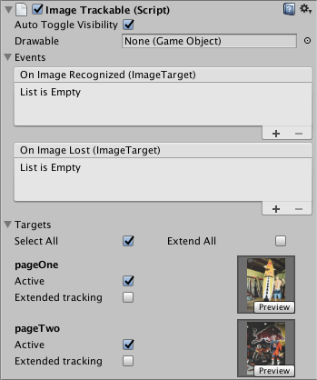
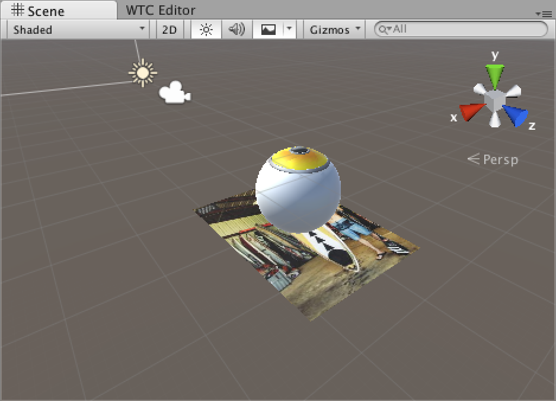

Image Recognition
Introduction
This example shows how to recognize images in the viewfinder and overlay it with images. Furthermore it shows how to recognize multiple different images and how to react on user clicks on the overlaid elements.
For a better understanding, here are some terms that will be used in the following and other section of this documentation related to augmented reality.
Target: A target image and its associated extracted data that is used by the tracker to recognize an image.
Target collection: An archive storing a collection of targets that can be recognized by the tracker. A target collection can come from two different resource types
- Plain: A regular ZIP file containing images in plain JPG or PNG format
- Pre-processed: Regular images that are converted into a WTC file (Wikitude Target collection) for faster processing and storing more images offline.
ImageTracker: The tracker analyzes the live camera image and detects the targets stored in its associated target collection. Multiple trackers can be created, however only one tracker can be active for recognition at any given time.
Make sure to read the chapter on how to create Image Targets before using Image Recognition on your own.
Extended Recognition Range
Introduced with SDK 7.0, the Wikitude SDK Image Recognition engine can make use of HD camera frames to detect images from further away. Further away in this context means distances 3x further away, compared to not enabling this mode (e.g. A4-sized target can reach recognition distances in the area of 2.4 meters/ 8 feet). This feature is called Image Recognition Extended Range and can be activated through a setting in the ImageTracker class. The setting extendedRangeRecognition is optional and accepts the following three constants
ONOFFAUTO(default)
see ImageRecognitionRangeExtension
Processing a HD camera frame in the pipe-line is computationally more expensive - this means that this feature is only activated, if the phone can handle this additional effort without sacrificing user experience. The AUTO setting will determine that based on available CPU power and camera access (e.g. Camera2 API for Android) and is the default setting in the SDK.
Simple Image Recognition in Unity
The Wikitude Unity Plugin is based on pre-configured prefabs. There are two types of prefabs available. One is the WikitudeCamera prefab and the other ones are tracker prefabs.
WikitudeCamera Prefab
The WikitudeCamera prefab takes care about rendering the live camera stream fullscreen behind all your augmentations. Attached to this prefab is a script component which has one parameter that is not pre filled. This parameter is for the Wikitude SDK license key and has to be filled with your very own license key. You can either buy a commercial license from our webpage or download a free trial license key and play around with our Native SDK in combination with Unity.
ImageTracker Prefab
To add a tracker prefab to the scene, simply drag the ImageTracker prefab into the scene hierarchy.
An ImageTracker itself needs a Wikitude Target Collection (.wtc file) which contains information needed to detect those reference images. Target collections can be generated and downloaded from the Wikitude Studio - a free web based tool, that you can access with your developer account. You can also generate .wtc files right inside Unity with the WTC Editor. Place the .wtc file into the StreamingAssets folder, so that the Wikitude Native SDK can load them at runtime. To specify which .wtc file should be used, select the ImageTracker game object in the scene. Make sure that the Target Source is set to Target Collection Resource and using the dropdown next to Target Collection you can choose the desired one.
To react on events like successfully loading of a .wtc file, you can use the Unity Events listed in in the inspector of the ImageTracker. These events are split into two groups. The first group contains events triggered by the TargetCollectionResource when the wtc file was loaded of if there was an error. The second group are events triggered by the ImageTracker itself if it was successfully initialized with the desired .wtc file or not. On the desired event, click the plus sign to add a new subscriber, drag the GameObject that should receive the event over the None (Object) field and select the function you want to be called from the No Function dropdown.
When subscribing to events that have a single basic parameter type, make sure to select your function from top list marked with Dynamic, rather than the static version from the bottom. This ensures that the parameters are passed correctly from the Wikitude plugin and are not overwritten by Unity.

For more information on working with Unity Events, please check the Unity Manual and Events Tutorial.
Define custom augmentations
Also part of the ImageTracker prefab is an ImageTrackable object. A trackable defines which targets from your collection you want to be tracked.
If the tracker is using a .wtc file located in the StreamingAssets folder, the ImageTrackable inspector will show a list of all the targets in the .wtc file. By toggling the Active button, you can select which targets will be tracked by this trackable, or you can choose Select All at the top to include all the targets. You can similarly choose which targets should use extended tracking.

By pressing the Preview button, the target will be displayed in the 3D view of the scene, providing a convenient way to place your augmentation relative to the target.

If the .wtc file is located somewhere else, for example if you are downloading it at runtime, or when using CloudRecognitionService instead, you can still select which targets will be included by entering the target name into the TargetPattern text field. Possible values are full target image names (e.g. pageOne, pageTwo) or wildcards (page*). You can use * if you want to include all targets.
targetName used with the ImageTrackable component correspond to one of the target names in your target collection. You can also use wildcards to match any target or only a specific subset of targets.
In order to place 3D objects at the location where the reference image was found in the camera stream, add any GameObject as a child to the ImageTrackable object. During runtime, only the transform of the camera will be changed, so you can place and scale the ImageTrackable GameObject and its children however it is most convenient for you. Keep in mind that if you move the ImageTrackable GameObject during runtime, the camera will follow it, so you won't see any effective changes. If you need to move augmentations relative to the camera, for example when dragging augmentations based on user input, please make sure not to move Trackable GameObject, but its children.
The Auto Toggle Visibility toggle is enabled by default. When this is checked, the ImageTrackable GameObject will be automatically disabled when the target is out of view and enabled back when a target is tracked again.
To handle visibility manually, you can turn this toggle off and subscribe to the OnImageRecognized and OnImageLost events on the trackable. This can be useful when you want to show different augmentations based on which target was tracked. The string parameter of these events will indicate which target was tracked or lost.
The OnImageRecognized and OnImageLost events are called even when the Auto Toggle Visibility toggle is turned on. As an example, the Image Recognition - Extended Tracking updates the UI when the target is lost by handling OnImageLost.
Multiple Targets
An image tracker can track multiple targets at the same time. This can be configured in the ImageTracker inspector, by setting the Concurrent Targets to a value larger than 1. However, keep in mind that if you don't plan to use multiple targets, it is best to leave the value at 1 for optimal performance.
To define augmentations for multiple targets, you will need to set a prefab to the Drawable field in the ImageTrackable inspector. At runtime, when a new target is recognized the Drawable prefab will be instantiated and placed in the scene as a child of the Trackable and when the target is lost, it will be destroyed. When multiple targets are being tracked, their corresponding Drawables are positioned in the game world to match what the camera sees. This also means that you can infer the relative positions between targets directly in the game world.
This behaviour was designed to allow easy setup for simple use cases, but if you may need more control over the lifetime of the augmentations. If that is the case, you can leave the Drawable field empty in the ImageTrackable inspector and add callbacks to the OnImageRecognized and OnImageLost events. When OnImageRecognized is called, the ImageTarget that is passed as a parameter will contain a Drawable GameObject property. This empty GameObject behaves the same way as the Drawable described above and you should use it as a parent for your augmentations, to make sure they are positioned properly.
public void OnImageRecognized(ImageTarget recognizedTarget) {
// Create the custom augmentation.
// You can use recognizedTarget.Name and recognizedTarget.ID
// if you need custom augmentations for each target and instance.
GameObject newAugmentation = GameObject.CreatePrimitive(PrimitiveType.Sphere);
// Set the newAugmentation to be a child of the Drawable.
newAugmentation.transform.parent = recognizedTarget.Drawable.transform;
// Position the augmentation relative to the Drawable by using the localPosition.
newAugmentation.transform.localPosition = Vector3.zero;
}
Keep in mind that the Drawable is still destroyed when the target is lost, so if you still have the augmentations attached to it, they will be destroyed as well. The OnImageLost event is called before the Drawable is destroyed, so you can use that event to move the augmentations somewhere else if they need to persist after the target was lost.
In case the same target is detected multiple times simultaneously, the ID property in the ImageTarget parameter will help you distinguish between them.
Extended Tracking
Extended tracking is an optional mode you can set for each target separately. In this mode the Wikitude SDK will continue to scan the environment even if the original target image is not in view anymore. So the tracking extends beyond the limits of the original target image. The performance of this feature depends on various factors like computing power of the device, background texture and objects.
If the .wtc file containing the targets is located in the StreamingAssets folder, you should be able to see a list of all the targets in the inspector of the Image Trackable. To enable extended tracking, simply tick the Extended tracking option next to each target you want to extend, or select Extend All at the top of the list to extend all the targets.
If the .wtc file is loaded at runtime from a custom location, the Image Trackable will have a simpler interface, that will allow you to enable extended tracking manually and specify the names of the targets you would want to be extended. You can set the first name in the list to the wildcard * to extend all targets in the collection.
When Extended Tracking is enabled, the ImageTracker will fire OnExtendedTrackingQualityChangedEvents, which will let you know how well extended tracking is working based on the factors mentioned above.
Runtime Tracker
Image trackers can be created at runtime with no restrictions on the location of the target collection used. To do this, simply create a new GameObject and add the ImageTracker component to it, select TargetCollectionResource as the TargetSourceType and create a new TargetCollectionResource object. If you are using a collection located in the StreamingAssets folder, the TargetPath property should be the path relative to the StreamingAssets folder and UseCustomUrl property should be false.
If you want to use a collection located elsewhere on the device or on the web, the TargetPath property should be set to the absolute path to the target, prefixed by the protocol file://, http:// or https:// as appropriate. The UseCustomUrl in this case should be set to true. Please see the sample Client Tracker - Runtime Tracker as an example of how to set this up.
Trackables can also be created at runtime, but make sure to add them as a child of the tracker before the Start() method is called on the parent tracker, otherwise it won't get registered in time.
GameObject trackerObject = new GameObject("ImageTracker");
ImageTracker imageTracker = trackerObject.AddComponent<ImageTracker>();
imageTracker.TargetSourceType = TargetSourceType.TargetCollectionResource;
imageTracker.TargetCollectionResource = new TargetCollectionResource();
imageTracker.TargetCollectionResource.UseCustomURL = true;
imageTracker.TargetCollectionResource.TargetPath = "https://url.to.your.collection/collection.wtc";
GameObject trackableObject = GameObject.Instantiate(TrackablePrefab);
trackableObject.transform.SetParent(imageTracker.transform, false);
Creating trackers at runtime is also possible when using the CloudRecognitionService instead of a TargetCollectionResource
Multiple Trackers
You can have multiple trackers in the same scene, but only one can be active at a time. If you enable a second one, the first one will be automatically disabled by the plugin.